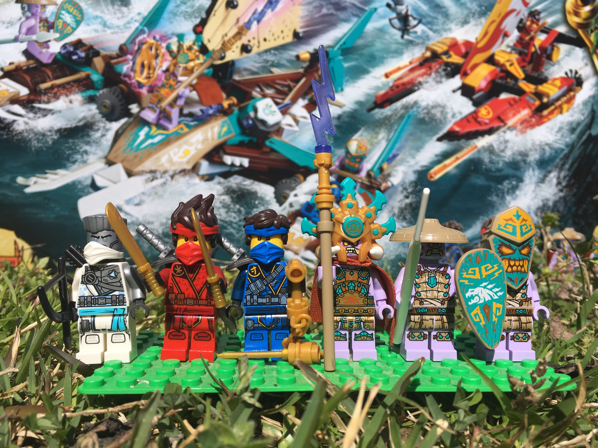
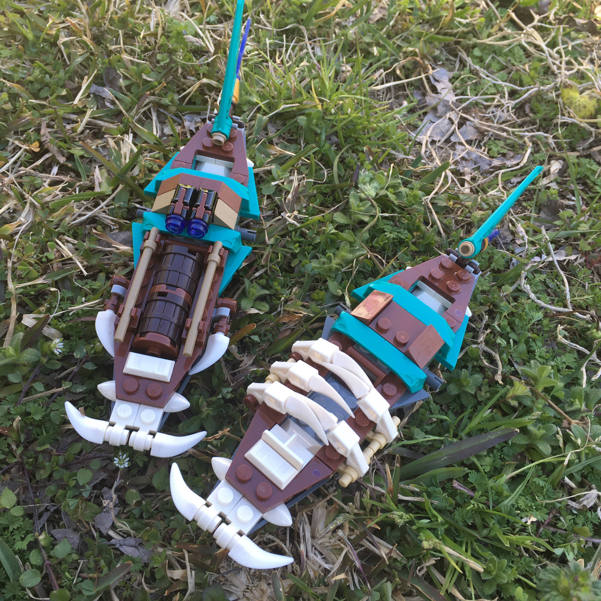

Scrimmage in the Muck • LEGO Ninjago Jungle Adventure (Ep. 2)
Mar 8, 2021
rioforce
NINJAGO 71748 Catamaran Sea Battle
In this video, I used the set LEGO NINJAGO 71748 Catamaran Sea Battle. Unlike the last set, this one isn't a 4+ set, so it was a marked improvement from my experience with Jay's Electro Mech.
The set comes with six minifigures. Zane, Jay, Kai, and three islanders.
I really like the new headband hair pieces for Jay and Kai. I've been putting the headband hair on other minifigures and it looks sweet as well. The islanders are also really nice minifigs. The bamboo hat and the masked minifigure are especially neat, in my opinion.
The set features two vehicles. The Kai speeder has a somewhat "transforming" feature where the "wings" of the boat extend for a sort of battle mode. It features missile launchers and and adjustable sail as well. The Islander's boat is actually three boats in one, because the sides of the boat come off for, again, a battle mode.
These are great vehicles. From a brickfilmer's perspective, I like them as well. They're well detailed and easy to animate with/on. I enjoyed using them in the making of the above brickfilm, and, if I had animated inside on a real set, I would have enjoyed it as well. Of course, I didn't animate inside.... I chose to animate outside lol.
What do you think of this set? Is there anything I missed with this review? Would you animate with it, or maybe use some of the parts to create something else? Lemme know below.